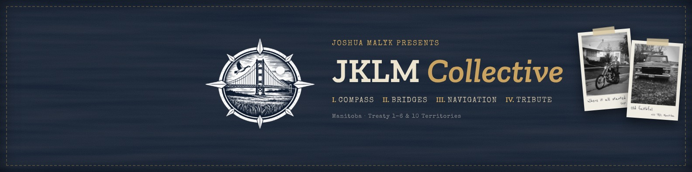
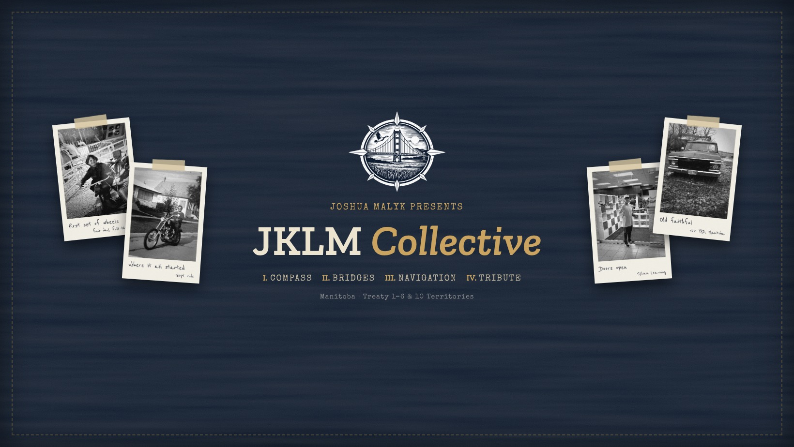
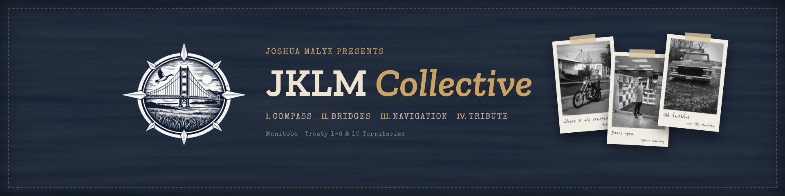
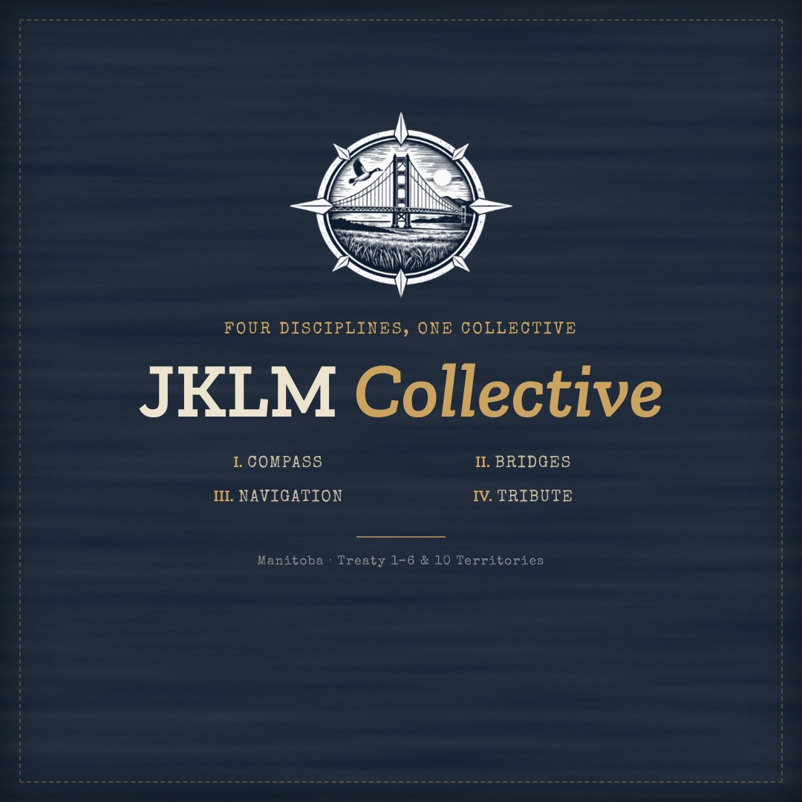
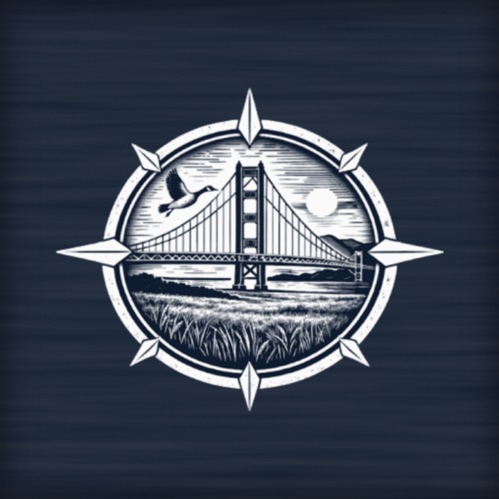
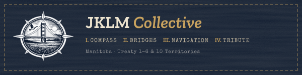

The brand
One brand, two sides
The classic side is navy, wheat gold, the compass & old-school Roman numerals. The rustic side is taped Polaroids, wood grain & a typewriter. Together they show both sides of Joshua.
I. The logo

The compass emblem
- Use it on navyThe emblem is cream line art, so it always sits on the navy background.
- Give it roomLeave space around it at least as wide as one compass point.
- Keep it wholeDon’t stretch, recolour or crop the circle.
- Smallest size40px wide on screen, 0.75″ in print.
What each part means is on the Story page.
II. Colour
Navy & wheat gold
Gold is for the wheat in the logo & Brandon roots. Use it for one word in each heading, the numerals & buttons, & keep the rest cream & kraft.
- Navy
#0F1B2EBackgrounds - Wheat gold
#C9A35FAccents, numerals, buttons - Gold soft
#E4CD9CHover - Aged cream
#EDE4D0Headings - Faded kraft
#C4B8A0Body text - Weathered tin
#8A8C8FCaptions - Barn-board seam
#3A3A3CLines & dividers
III. Type
Four fonts, one voice
JKLM Collective
Zilla SlabHeadings · one word in gold italicDigital & guided support through connection.
ArchivoBody textI. Compass · II. Bridges
Special EliteLabels, menus, buttons & numeralsWhere it all started
Reenie BeanieHandwritten Polaroid captions only
IV. Voice
How JKLM talks
- Use “&”Write “people & businesses”, never “people and businesses”.
- Roman numeralsI. Compass · II. Bridges · III. Navigation · IV. Tribute, always in this order.
- Manitoba-basedSay Manitoba, not one city.
- Show upPlain, warm & direct. Short sentences. No jargon.
- Real photosFamily & work photos in black & white, as taped Polaroids with a handwritten caption.


V. Social kit
Banners for every platform
Click any image to download it.












Land acknowledgement
Three lengths
Full · Story page & presentations
JKLM Collective is based in Manitoba, on Treaty 1, 2, 3, 4, 5, 6 & 10 territories. These are the ancestral lands of the Anishinaabeg, Cree, Oji-Cree, Dakota & Dene Peoples, & Manitoba is the homeland of the Red River Métis. Northern Manitoba also includes the ancestral lands of the Inuit.
I am grateful to live & work here. Much of what I have learned about design & technology came through IndigiTECH, & I want JKLM Collective to show up for this community with the same respect that the people of this land have shown it for generations.
Short · footers, bios & email signatures
JKLM Collective is based in Manitoba, on Treaty 1, 2, 3, 4, 5, 6 & 10 territories, the ancestral lands of the Anishinaabeg, Cree, Oji-Cree, Dakota & Dene Peoples & the homeland of the Red River Métis.
One line · banners
Manitoba · Treaty 1–6 & 10 Territories